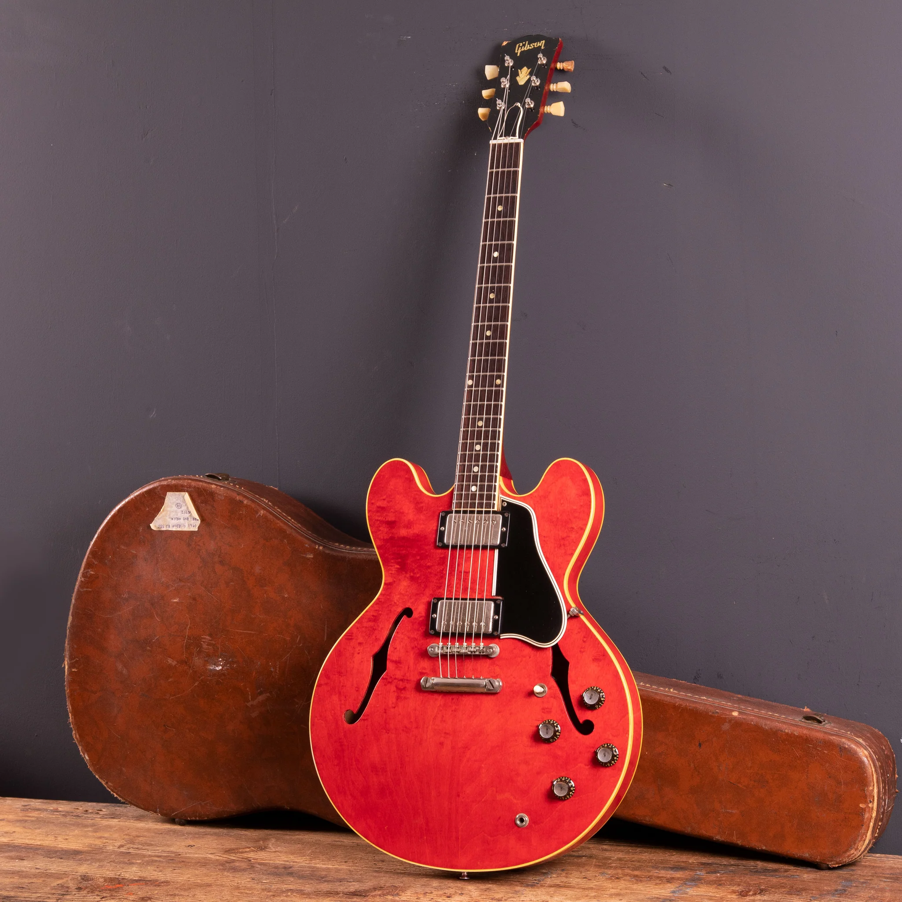
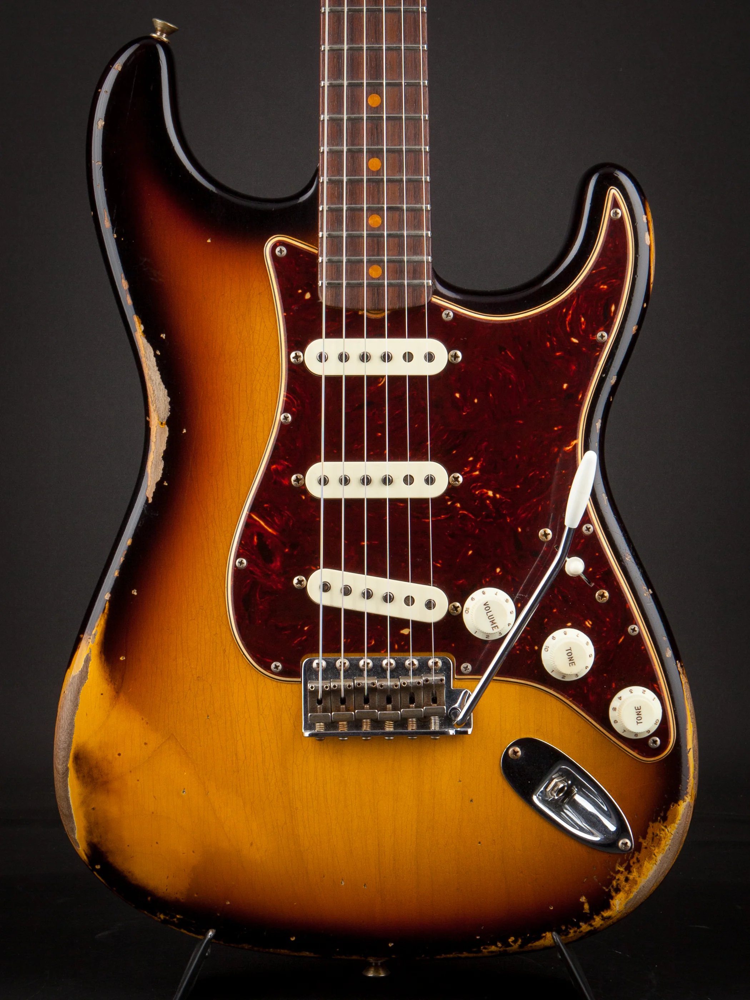
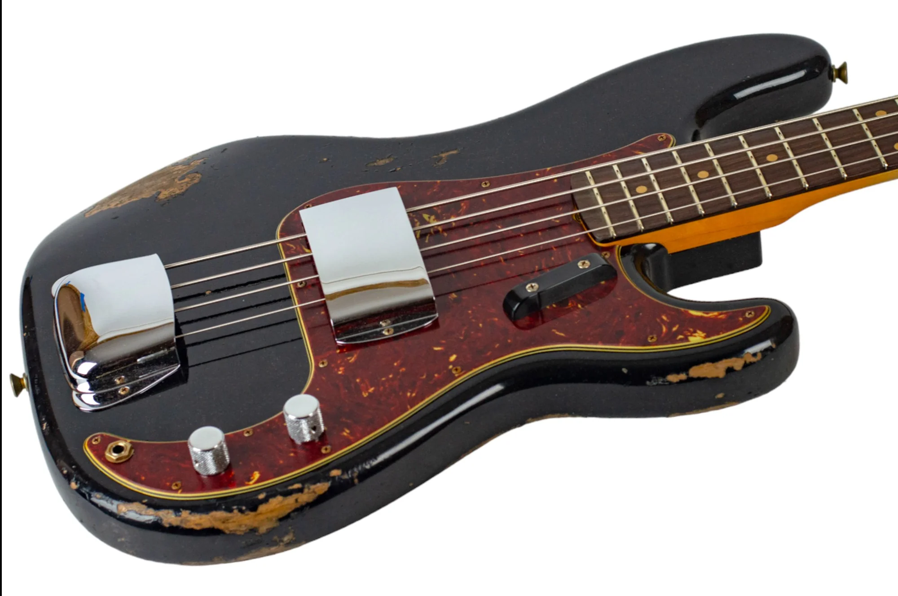

If you break the rules, try to leave or lose the game, you will die. Just like Saaaaw. Oh, wow. That's an intense line of questioning, Snuffles I'll tell you how I feel about school, Jerry. It's a waste of time.
See more Suhr Classic Antiques

If you break the rules, try to leave or lose the game, you will die. Just like Saaaaw. Oh, wow. That's an intense line of questioning, Snuffles I'll tell you how I feel about school, Jerry. It's a waste of time.
Read more about the Gibson history

If you break the rules, try to leave or lose the game, you will die. Just like Saaaaw. Oh, wow. That's an intense line of questioning, Snuffles I'll tell you how I feel about school, Jerry. It's a waste of time.
Check out Fender Custom Shop
If you break the rules, try to leave or lose the game, you will die. Just like Saaaaw. Oh, wow. That's an intense line of questioning, Snuffles I'll tell you how I feel about school, Jerry. It's a waste of time.
See who plays Tama!

If you break the rules, try to leave or lose the game, you will die. Just like Saaaaw. Oh, wow. That's an intense line of questioning, Snuffles I'll tell you how I feel about school, Jerry. It's a waste of time.
See the Fender Bass Range